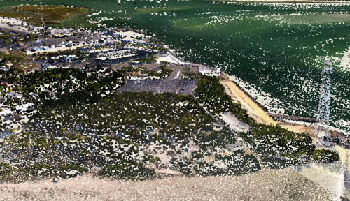
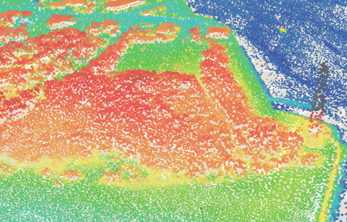

Release notes for 4.2
- Topics
- Custom widget development
- New widgets
- Arcade expressions in visualization
- Revamped VectorTileLayer support
- Improvements to event handling in MapView and SceneView
- Point clouds
- Elevation Query API
- Generate visualizations with smart defaults
- Custom goTo() animations
- Workers framework
- Support for Indonesian and Bosnian locales
- API updates and enhancements
- Breaking changes
- Bug fixes and enhancements
- Additional packages
Topics
Custom widget development
In addition to the Esri-provided widgets, you can now create your own custom widget using the new widget framework. This framework allows you to create subclasses off of the Widget class. For additional information on this, please refer to the Widget development guide topic, in addition to two new samples showcasing this functionality:

New widgets
The LayerList and Print widgets have been designed from the ground up with a clean user experience and responsive design. Both follow the API's view model architecture for extensibility and customization described above.
LayerList and Print are the first two widgets that have been implemented using the new widget framework. The remaining ready-to-use widgets, (e.g. Home, Search, etc.) are planned to be updated in subsequent API releases.
LayerList widget
The LayerList widget provides a way to display a list of layers, and switching on/off their visibility. It also supports easily adding your own custom actions, similar to the actions that can be added to a popup.
Print widget
The Print widget allows users to export the current mapview for printing or saving. It connects your application with a printing service to allow the map to be exported to different file formats, including PDF which is the default output format. It takes advantage of the server-side, high-quality, full cartographic print functionality using ArcGIS Server, which can be configured with custom layout templates.
Arcade expressions in visualization
Arcade is a lightweight expression language designed for creating custom content, visualizations, and labels across the ArcGIS platform. In the 4.2 release of the API, Arcade is exclusively used for custom data-driven visualizations. Rather than base visualizations on the value of a layer's field, users now can pass an expression to renderers and visual variables. The expression will execute for each feature, generating a symbol based on the returned value. This is convenient when a service doesn't have the exact values you need. Arcade comes equipped with its own library of functions and allows users to write custom functions within an expression.
The following snippet demonstrates how you can write an Arcade expression showing the share of the vote earned in an election by the winner for each geography in the layer.
// CANDIDATE1 and CANDIDATE2 are field values
var arcade = "var votes = [$feature.CANDIDATE1, $feature.CANDIDATE2];"
// Sum() and Max() are built-in Arcade functions
+ "return ( Max(votes) / Sum(votes) ) * 100;";
renderer.visualVariables = [{
type: "color",
valueExpression: arcade, // valueExpression points to the Arcade expression
valueExpressionTitle: "Share of winner's votes",
stops: [ ... ]
}];
Arcade is convenient for a number of reasons, including providing the ability to save expressions to layer items and web maps in ArcGIS Online or Portal for ArcGIS. That means expressions can be authored in apps and persisted in webmaps throughout the ArcGIS platform. In future releases, users will have the ability to use it in other contexts, such as labeling.
Be sure to read the full Arcade documentation for details about its syntax and the Arcade guide page for more examples of its usage within the API. The Create a custom visualization using Arcade sample demonstrates how Arcade can be used in this context.
Revamped VectorTileLayer support
This release of the JavaScript API includes some important changes to the VectorTileLayer. With this release, the implementation of the VectorTileLayer has been re-written to be more tightly integrated with the API. The VectorTileLayer still fully supports the current Mapbox Style Specification (version 8) and MapBox Vector Tile specification. The enhancements with this first release of the new vector tile implementation include:
- Vector tile layers support in 3D
- The label engine was designed with improved display (avoiding label cut-off on tile boundaries), with better label placement and collision detection. We will continue to work on improvements in this area.
- No symbol cut-off on tile boundaries.
- Right-to-left (RTL) support for map labels. Languages like Arabic and Hebrew require RTL with contextual shaping support to ensure continuous flowing text. Initially, this will only be apparent with labels in the ArcGIS Online basemaps. At ArcGIS Pro 1.4, users will be able to create and publish vector tile layer packages that contain RTL support for any font family.
- Support for vector tiles in any ArcGIS-supported spatial reference.
- Microsoft Edge and IE11 support.
- Full support for indexed vector tiles. Indexed vector tiles allow tile creators to efficiently generate data dependent tiles reducing the amount of time (and tiles) it takes to build out the tile set for the layer. Note: We still have an open PR on MapBox vector-tile-js which adds support for indexed vector tiles.
While the underlying implementation is different, existing layers published to ArcGIS Online and Portal for ArcGIS will continue to work.
Improvements to event handling in MapView and SceneView
The following keyboard and pointer events are now available on MapView and SceneView:
- double-click - fires after double-clicking on the view.
- drag - fires during a pointer drag on the view.
- key-down - fires after a keyboard key is pressed.
- key-up - fires after a keyboard key is released.
- mouse-wheel - fires when a wheel button of a pointing device (typically a mouse) is scrolled on the view.
- pointer-down - fires after a mouse button is pressed, or a finger touches the display.
- pointer-move - fires after the mouse or a finger on the display moves.
- pointer-up - fires after a mouse button is released, or a display touch ends.
See the following samples:
Point clouds
Point cloud data can be visualized using the new PointCloudLayer. Visualizing point clouds in different ways can help extract important information. With the JavaScript API point cloud data can be visualized in the following ways:
- based on the original scan colors using PointCloudRGBRenderer, 
- based on nominal unique values using PointCloudUniqueValueRenderer,
- based on a numerical attribute mapped to a continuous color scale using PointCloudStretchRenderer, 
- based on classes extracted from a numerical attribute using PointCloudClassBreaksRenderer.
See the Point Cloud Layer sample for more details on this topic.
Elevation Query API
Elevation values, or z-values, in 3D SceneViews for a given point can be obtained in a couple of ways. One is via the hitTest() method, which provides an approximate elevation for a given ScreenPoint. Starting at version 4.2, you can now query more precise elevation values for points and polylines directly from an ElevationLayer with the queryElevation() method.
The image below links to to a sample that demonstrates how you can query elevation at the same location from two elevation layers: one representing the surface before a landslide and the other after the landslide. You can then calcualte the elevation difference based on the results.
New samples:
Generate visualizations with smart defaults
Data-driven and simple location-based visualizations can be generated with "smart" default symbology with methods in one of four objects new to the API for generating renderers with smart default symbols:
- location - generates a single symbol for all features in a layer.
- color - generates data-driven visualizations with continuous color based on a numeric field.
- size - generates data-driven visualizations with continuous size based on a numeric field.
- univariateColorSize - generates visualizations with continuous color and size ramps based on a single numeric field. This type was designed specifically for visualizations using 3D symbols.
The data-driven methods available in each of these objects are built on top of of the new statistics functions: summaryStatistics, classBreaks, and histogram. These functions drive how the continuous color and size ramps are mapped to data values in the layer. The symbology component of the generator functions are based on the location, color, and size objects, which provide convenience methods for getting schemes and themes for each style.
Three widgets were also added: ColorSlider, SizeSlider, and UnivariateColorSizeSlider providing users with the ability to easily explore spatial patterns in their data and update data-driven visualizations to highlight alternate nuances of the data such as emphasizing outliers, similar features, or features with values above or below a certain point.
The visualization generator workflows are designed for allowing users to explore unfamiliar data and/or save custom visualizations to portal items (layers, webmaps, webscenes) with a simple UI.
The following are new samples demonstrating how the renderer generators and slider widgets work together.
- Generate data-driven continuous color visualization
- Generate data-driven continuous size visualization
- Generate univariate continuous size and color visualization in 3D
Custom goTo() animations
When user orientation and correlation between the two locations is important, changing view center to a new location should be done smoothly. With this release the duration of the animation as well as an easing function can be given to control better the animation mode.
In the example below the camera speed grows gradually (to the power of 3), but limits the duration to 4 seconds.
view.goTo(newLocation, {
duration: 4000,
easing: "in-cubic"
});
To discover more custom options for goTo() in 3D see the Using goTo() in a SceneView sample.
Workers framework
The workers framework provides a means to improve performance by offloading computationally expensive tasks to background threads, without blocking the user interface which runs in the main thread. The workers.open() method loads the script and returns a Promise to the main thread. This promise resolves to an instance of Connection. The main thread can then asynchronously invoke methods from the worker script by calling the invoke() or broadcast() methods.
Support for Indonesian and Bosnian locales
Version 4.2 adds support for two new locales: Indonesian (id) and Bosnian (bs). See Localization topic for more information about using different locales.
API updates and enhancements
- Added PointCloudLayer.
- Added PointCloudClassBreaksRenderer.
- Added PointCloudRGBRenderer.
- Added PointCloudRenderer.
- Added PointCloudStretchRenderer.
- Added PointCloudUniqueValueRenderer.
- Added LayerList widget, LayerListViewModel, Action object and ListItem object.
- Added Print widget and PrintViewModel.
- Added PortalRating class.
- Added promiseUtilsMethods object.
- Added workers object and Connection class.
- Added the following functions for generating statistics for field values: classBreaks, histogram, and summaryStatistics.
- Added objects for generating renderers and visual variables based on location, color, size, and univariateColorSize.
- Added three slider widgets for exploring numeric data and authoring visualizations: ColorSlider, SizeSlider, and UnivariateColorSizeSlider.
- Added symbology objects used to generate renderers based on location, color, and size.
- Deprecated startup() on all widgets.
- Added support for 'with-credentials' option when specifying esri.config.request
useCorsproperty. - Added support for Objects in esri.config.request
corsEnabledServerslist.
Breaking changes
- To increase security, browsers are starting to block Geolocation API on insecure pages, meaning that the Locate button will not work from non-secure web pages (i.e., hosted on http). Google Chrome first implemented this in version 50 (April 2016) and Apple in Safari 10 (September 2016). Mozilla/Firefox is planning to do the same. At version 4.0 and 3.17 the JSAPI no longer displayed the Locate Button for non-secure web apps in the Chrome browser. As of version 4.2 and 3.19, the JSAPI no longer displays the Locate Button for non-secure web apps in any web browser. Note that localhost is considered "potentially secure" and can be used for easy testing.
- The following VectorTileLayer properties are removed: ACCESS_TOKEN
Bug fixes and enhancements
- BUG-000100846: Opacity values for VectorTileLayer are no longer ignored.
- BUG-000101162 VectorTileLayers now zoom to the full extent when changing visibility.
- BUG-000101189 - The click event is no longer recognized as a double click using Google Chrome on Windows touch screen devices.
- BUG-000096543: Map clicks and mouse wheel scrolling works correctly now if the page is scrolled down.
- BUG-000098977: Fixed an issue when clicking on a graphic from a feature layer created from a collection, the pop-up would not display if the graphic overlapped graphics from a feature service layer.
- ENH-000091355: Map can now focus using the keyboard.
- BUG-000099840: Can now rotate the MapView in Mozilla Firefox.
- BUG-000098915: The attributes now move with the Map when vertically panning.
- BUG-000099757: GeometryEngineAsync now resolves successfully with the first call.
- ENH-000099112: Updated documentation that CORS is required for all cross domain image requests.
- BUG-000095058: Fixed an issue where graphics from a graphics layer or feature layer were cut off by the map's edge after rotation.
- BUG-000097724: Popup no longer shows an offset when map width/height is bigger than 100%.
- Popup.location automatically converts WGS84 (latitude, longitude) points to web mercator when map is in web mercator projection. Stackoverflow question.
- Safari browser only: popup with live feeds in iframe was not cleared out when closing the popup.
Additional packages
Version 4.2 of the ArcGIS API for JavaScript uses Dojo 1.11.2 (since 4.1), dgrid version 1.1.0 (since 4.1), and dstore version 1.1.1 (since 4.0).
Previous releases
- Version 4.8 - July 2018
- Version 4.7 - April 2018
- Version 4.6 - December 2017
- Version 4.5 - September 2017
- Version 4.4 - July 2017
- Version 4.3 - March 2017
- Version 4.2 - December 2016
- Version 4.1 - September 2016
- Version 4.0 - May 2016